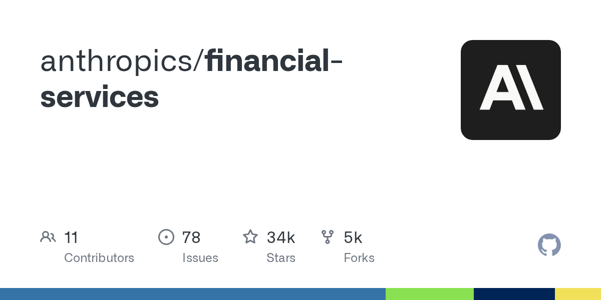

GitHub｜Anthropic financial-services：金融服務專用 Claude agents、skills、MCP connectors 與 Managed Agent cookbooks

為什麼保存
欒帥這次分享的是 primary source：Anthropic 官方 GitHub repo `anthropics/financial-services`。AI 學習雷達先前已保存過羅達 Rhoda 對這個 repo 的社群拆解；本篇補上「直接 GitHub 查核版」，重點放在 repo 結構、Managed Agent cookbooks、MCP connectors 與可重用的 agent/skill 工程模式。
它值得保存的原因是：金融服務是最適合觀察「AI agent 如何進入高風險專業工作」的領域之一。這個 repo 並不是單純 demo，而是把投行 pitch、market research、earnings review、model building、KYC、GL reconciliation、month-end close、LP statement audit 等流程拆成可版本管理的 prompts、skills、slash commands、connectors 與 deployment templates。
GitHub 查核快照
- Repo：`anthropics/financial-services`
- URL：https://github.com/anthropics/financial-services
- 主要語言：Python
- 授權：Apache-2.0
- 建立：2026-02-23T19:24:50Z
- 最近更新：2026-08-11T03:19:35Z
- 最近 push：2026-08-04T14:41:29Z
- Stars：約 34,167（2026-08-11 查核，會變動）
- Forks：約 5,087（2026-08-11 查核，會變動）
- Default branch：main
README 對 repo 的定位是：Reference agents, skills, and data connectors for financial-services workflows，涵蓋 investment banking、equity research、private equity 與 wealth management。它同時支援兩種使用面：Claude Cowork plugin，以及透過 Claude Managed Agents API 放到自家 workflow engine 後方。
Repo 裡有什麼
### 10 個 end-to-end agent plugins
README 列出 10 個命名 agent，每個 agent plugin 都是自包含工作流：
- Pitch Agent：comps、precedents、LBO 到 branded pitch deck。
- Meeting Prep Agent：客戶會議前 briefing pack。
- Market Researcher：產業 / 主題 overview、competitive landscape、peer comps、ideas shortlist。
- Earnings Reviewer：earnings call + filings → model update → note draft。
- Model Builder：DCF、LBO、三表模型、comps，且強調 live in Excel。
- Valuation Reviewer：GP packages、valuation template、LP reporting。
- GL Reconciler：找 breaks、追 root cause、送 sign-off。
- Month-End Closer：accruals、roll-forwards、variance commentary。
- Statement Auditor：LP statements 分發前 tie-out / audit。
- KYC Screener：解析 onboarding docs、跑 rules engine、標記 gaps。
### 7 個 vertical plugins
Repo tree 顯示 vertical plugin 包含：financial-analysis、investment-banking、equity-research、private-equity、wealth-management、fund-admin、operations。這些 vertical plugins 是 skills、commands 與 MCP connectors 的來源；agent plugins 會 bundle 所需 skills。
### Managed Agent cookbooks
`managed-agent-cookbooks/README.md` 說明：同一個 agent 同時作為 Cowork plugin 與 Claude Managed Agent template 出貨，系統 prompt 與 skills 共用同一來源。cookbook 包含：
- `agent.yaml`：引用 canonical system prompt 與 skills。
- `subagents/*.yaml`：depth-1 leaf workers。
- `steering-examples.json`：headless orchestration 可用的事件範例。
- per-agent README：security tier 與 handoff notes。
Pitch Agent 的 `agent.yaml` 範例顯示：orchestrator 可接 agent toolset、MCP toolset（例如 capiq、daloopa）、skills，以及 researcher / modeler / deck-writer 三個 callable agents，其中只有 deck-writer leaf 有 Write 權限。這個設計很適合作為「金融 agent 如何切分讀取、建模、輸出、審核權限」的範例。
MCP connectors 與資料源門檻
README 與 `.mcp.json` 顯示 connectors 涵蓋 Daloopa、Morningstar、S&P Global、FactSet、Moody's、MT Newswires、Aiera、LSEG、PitchBook、Chronograph、Egnyte、Box 等。這呼應先前歸檔的社群判讀：真正高門檻不是 markdown prompt，而是機構級資料源、API key、授權與合規。
補充 caveat：本次 raw 擷取的 `plugins/vertical-plugins/financial-analysis/.mcp.json` 看起來有逗號 / 括號格式問題，因此本文只把它作為 connector 清單線索，不宣稱該檔可直接 parse 或可直接安裝成功。正式使用仍需以 repo 當前 commit、插件安裝器驗證與 Anthropic 官方文件為準。
對 AI 學習雷達 / Hermes 的價值
這個 repo 的學習價值不只在金融，而在「專業服務 agent 化」的方法：
- 把專業流程拆成 named agents、skills、commands、connectors，而不是只寫一個超長 prompt。
- 同一份 prompt/skill source 同時服務互動式 Cowork plugin 與 headless Managed Agent deployment。
- 將高風險工作拆成 orchestrator + leaf workers，並限制只有特定 leaf 有寫入權限。
- 用 MCP connectors 把外部資料源與內部文件庫接入，但保留 human sign-off。
- 以 markdown / YAML / JSON 管理 agent 行為，讓金融分析 SOP 可以被版本控制、審查與同步。
對欒帥的 Hermes 工作流來說，可以借鏡兩點：第一，Hermes skills 也應該把專業流程拆成可維護的小技能；第二，凡是涉及金融、報名個資、企業內部資料或外部發佈，都應該把「讀取、分析、寫入、發布」權限分層，而不是讓同一個 agent 無限制完成所有動作。
重要邊界
README 明確提醒：repo 內容不構成投資、法律、稅務或會計建議。這些 agents 只是草擬 analyst work product，例如 models、memos、research notes、reconciliations，必須由合格專業人士審核；它們不做 investment recommendations、不執行交易、不承諾風險、不 post 到 ledger，也不 approve onboarding。
因此本條目應視為「金融專業 workflow / agent architecture 參考」，不是投資建議或可直接上線的金融決策系統。
與既有條目的關係
先前 AI 學習雷達已有社群解讀版：羅達 Rhoda 對 Anthropic financial-services skills 門檻的拆解。這篇新條目補的是 GitHub primary-source 角度與 2026-08-11 metadata 快照。
- 既有社群解讀：../articles/2026/07/2026-07-26-facebook-rhoda-anthropic-financial-services-skills.html
- GitHub repo：https://github.com/anthropics/financial-services
- Managed Agents docs：https://docs.claude.com/en/api/managed-agents
- Claude Cowork：https://claude.com/product/cowork